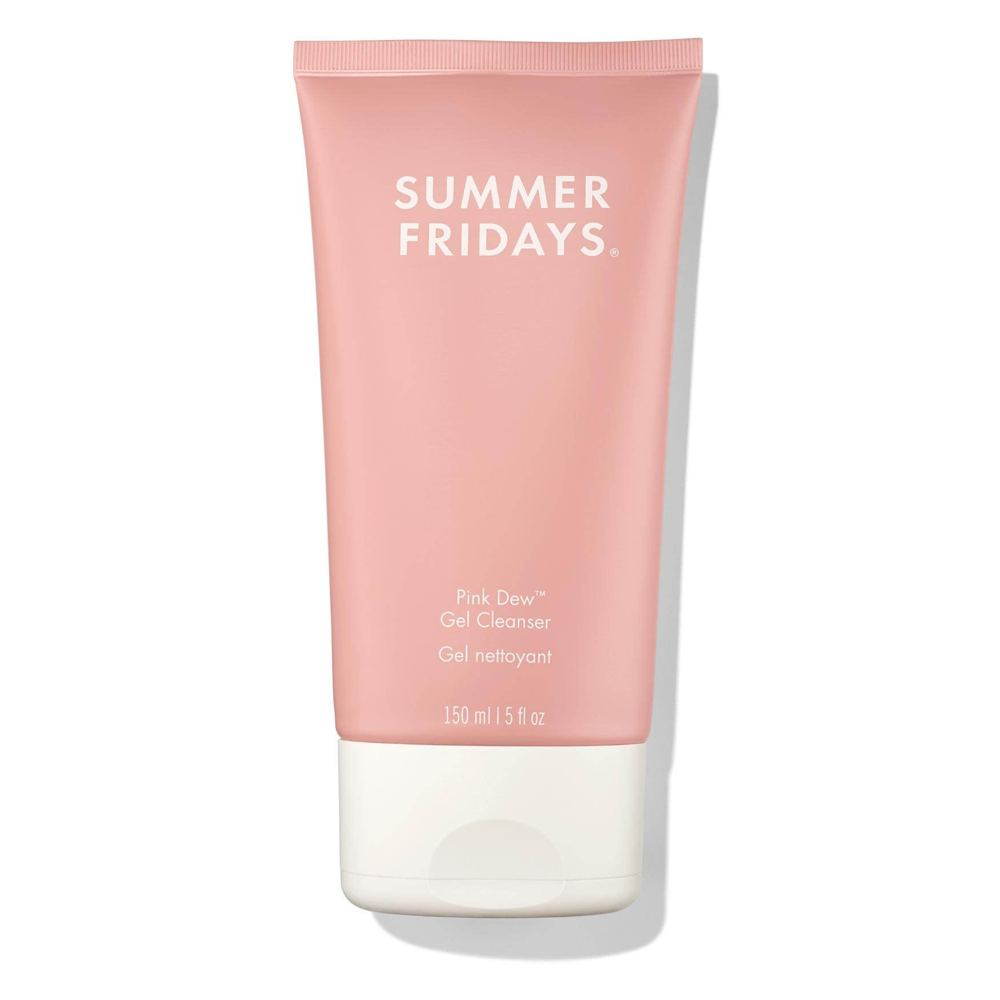

1

Cleanser
Starting with clean skin is important because leftover oil, dirt and skincare can affect how your makeup sits. Cleansing gives you a fresh, smooth base and helps your makeup apply more evenly.